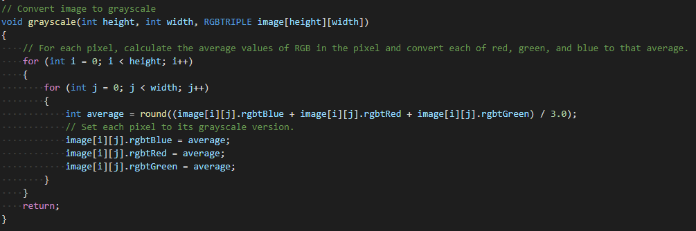
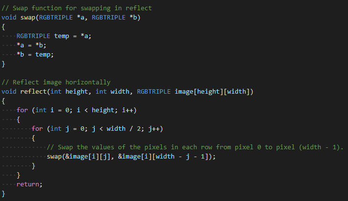
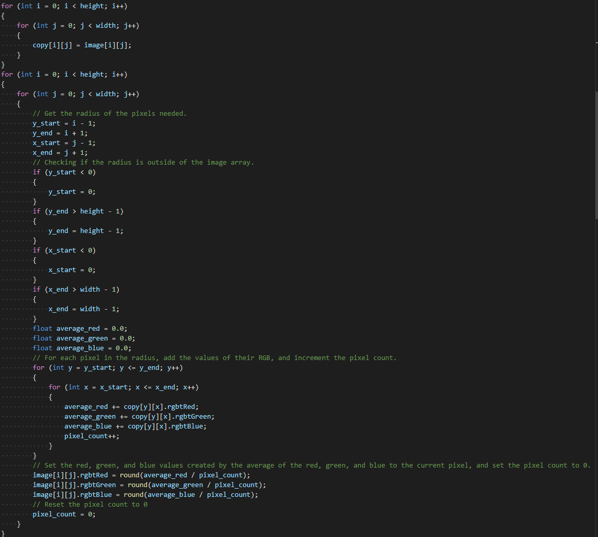
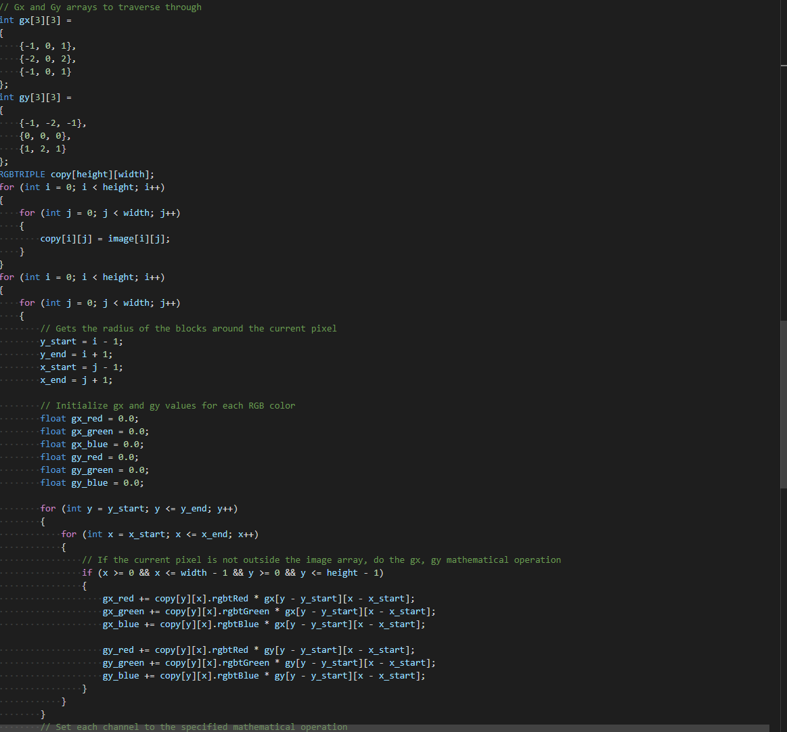

This is the documentation and download link to my filters project in C
Documentation
This project does multiple processes in order to apply multiple filters to a specified .bmp file including grayscale, reflection, blur, and edge detection
Grayscale: get the average of RGB in current pixel and put it as the current pixel
Reflection: swap each two pixels, very simple
Blur: get the average of the RGB values of all pixels around the current pixel, and set that current pixel's RGB values to the average
Edges: Apply the Sobel Image Edge Detection algorithm into each pixel, its explanation can be found online.




Download link
Here is the download link